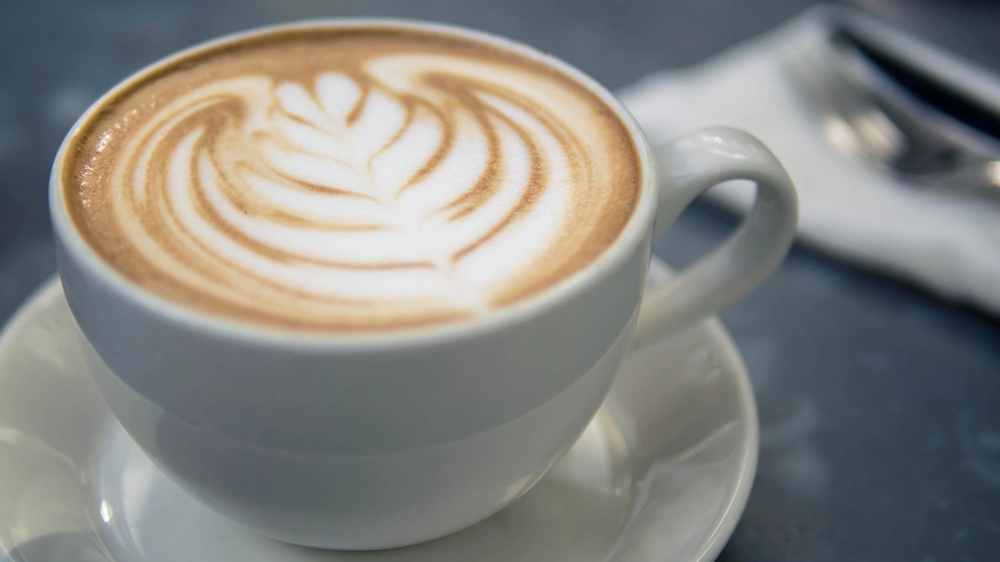
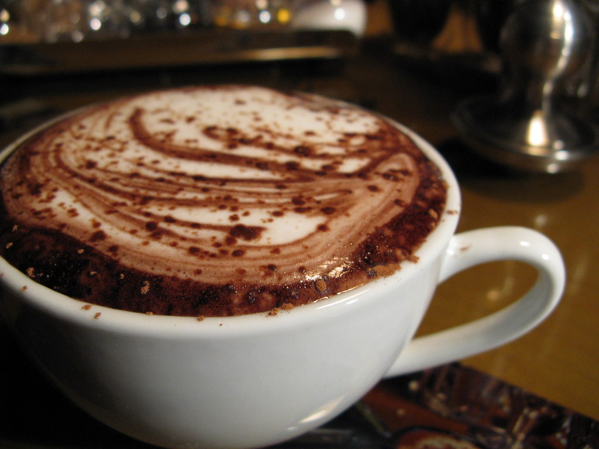
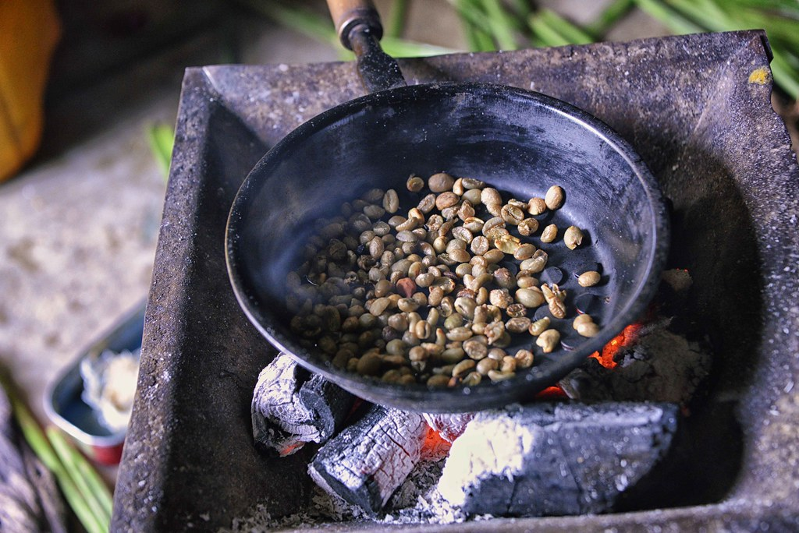
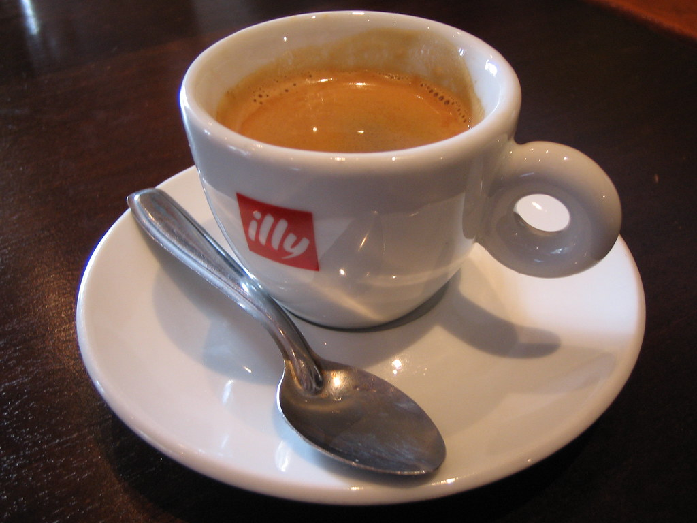
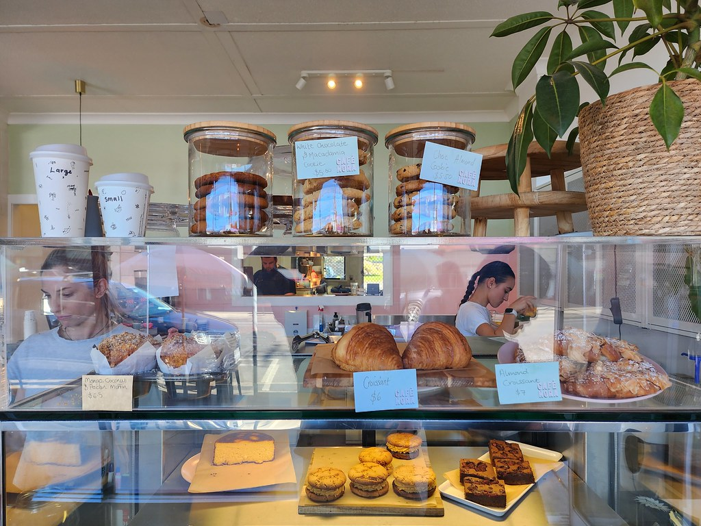
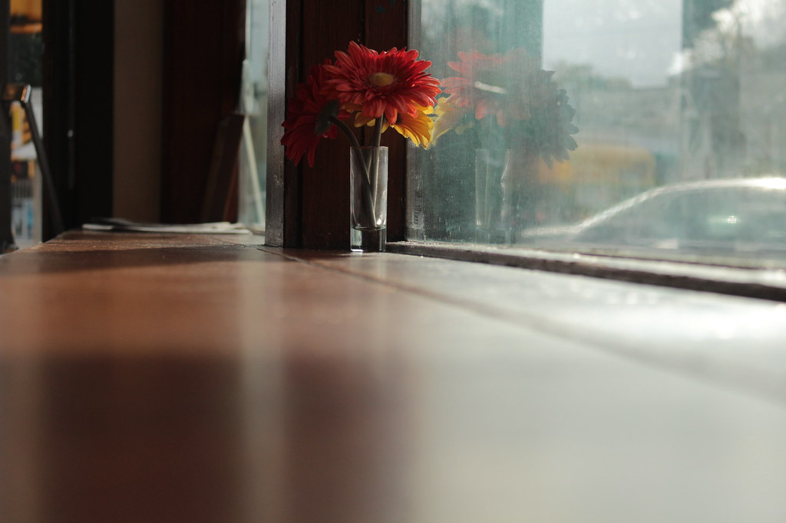
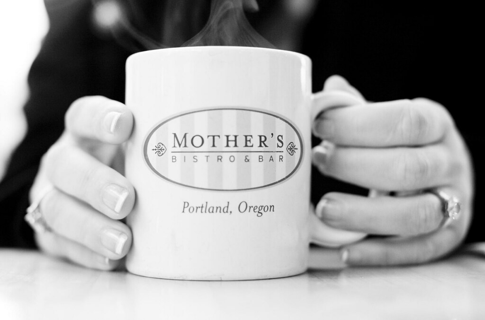

Capuchino de la casa
$8.500Espresso aterciopelado y leche texturizada hasta quedar cremosa. Cálido, redondo y con ese final dulce que invita al segundo sorbo.
Cafetería & bar · Guarne, Antioquia
No solo café.
Una experiencia única e inolvidable.
El ritual
Del grano al aroma, del primer sorbo a la última charla. Repostería recién horneada y nuestro café de la casa, todos los días.

Sobre nosotros
En Ajualá creemos que un buen café es una excusa para algo más grande: una conversación que se alarga, un libro que por fin abres, un encuentro que no tenías agendado. Por eso cuidamos cada detalle, desde el grano que tostamos hasta la luz que te recibe.
Somos cafetería de día y bar al caer la tarde, en el corazón de Guarne. Aquí no vienes solo por una bebida: vienes a quedarte un rato más de lo que pensabas. Te esperamos con la mesa lista y la taza caliente.
Descubre nuestras especialidadesGalería






Lo que dicen
Llegué por un café y me quedé toda la tarde. El lugar te abraza, y esa bebida de maracuyá ya es mi excusa para volver cada semana.
De día café, de noche un trago tranquilo. No conozco otro sitio en el pueblo con esta calidez. Atención impecable y todo hecho con cariño.
El croissant recién horneado con un capuchino: mi ritual de los sábados. Ajualá se volvió parte de mi rutina favorita.
Ven a visitarnos